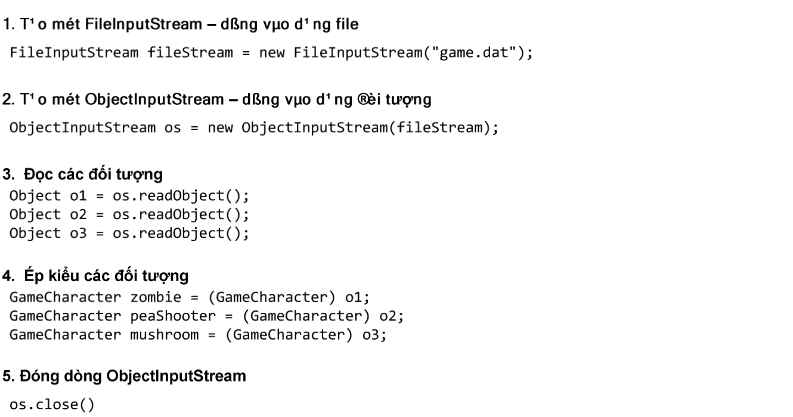
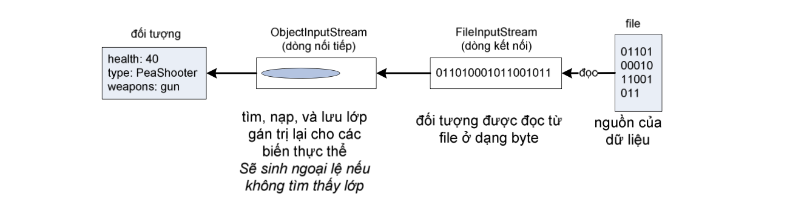

Mục đích của việc chuỗi hóa một đối tượng là để ta có thể khôi phục nó về trạng thái cũ vào một thời điểm khác, tại một lần chạy khác của máy ảo Java (thậm chí tại máy ảo khác). Việc khôi phục đối tượng (deserialization) gần như là quá trình ngược lại của chuỗi hóa.
Bước 1: tạo một dòng vào dạng file, FileInputStream, đối tượng dòng vào này kết nối với file có tên 'game.dat', nếu không tìm thấy file với tên đó thì ta sẽ nhận được một ngoại lệ.
Bước 2: tạo một đối tượng dòng vào dạng đối tượng, ObjectInputStream. Nó cho phép đọc đối tượng nhưng nó lại không thể kết nối trực tiếp với một file. Nó cần được nối với một đối tượng kết nối, ở đây là FileInputStream, để có thể ghi ra file.
Bước 3: mỗi lần gọi readObject(), ta sẽ lấy được đối tượng tiếp theo từ trong dòng ObjectInputStream. Do đó, ta sẽ đọc các đối tượng theo đúng thứ tự mà chúng đã được ghi. Ta sẽ nhận được ngoại lệ nếu cố đọc nhiều hơn số đối tượng đã được ghi vào file.
Bước 4: giá trị trả về của readObject() là tham chiếu kiểu Object, do đó ta cần ép kiểu cho nó trở lại kiểu thực sự của đối tượng mà ta biết.
Bước 5: đóng ObjectInputStream. Khi đóng một dòng vào, các dòng mà nó nối tới, ở đây là FileInputStream, sẽ được đóng tự động. Việc đọc dữ liệu đến đây kết thúc.
Quá trình khôi phục đối tượng diễn ra theo các bước như sau:
